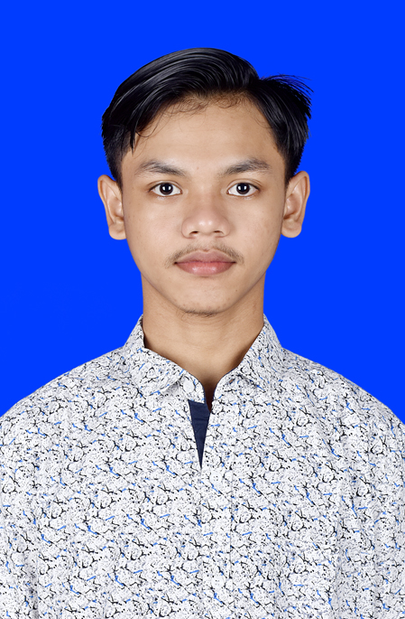

|  |
Sosial Media |
|
|
|
paulkusuma_ | |
|
|
paul.kusuma10@gmail.com | |
Youtube |
paulkusuma8460 | |
Github |
paulkusuma | |
Halo semuanyaa perkenalkan saya PAUL WIJAYA VERDA KUSUMA saya merupakan seorang
mahasiswa yang
sedang menempuh pendidikan di salah satu Perguruan Tinggi Swasta yaitu Universitas Sanata Dharama yang
berada di Yogyakarta.
Cerita tentang pendidikan saya, saya mulai bersekolah yaitu pada tahun 2008 dengam masuk di taman
kanak
kanak yaitu TK Kanisius Klepu
Selama saya memulai pendidikan dijenjang taman kanak kanak saya menempuh dengan 2 tahun yaitu dari 2008
sampai 2009.
Setelah saya bersekolah ditaman kanak kanak saya melanjutkan pendidikan yaitu memasuki Sekolah Dasar. Saya
bersekolah di
SD Kanisius Klepu, yang masih satu lingkup dengan TK.
Selama saya bersekolah di SD Kanisius Klepu dari tahun 2009 hingga 2015 banyak sekali pengalaman- pengalaman yang berkesan untuk saya, terutama dengan teman teman SD. Dan selama saya menempuh pendidikan si SD KANISIUS KLEPU saya dididik untuk menjadi peribadi yang memiliki disiplin dan sikap yang baik serta sopan dan santun. Di SD saya bisa selalu mendapatkan rangking di kelas dan mendaptkan nilai yang baik, karena saya disetiap pembelajaran saya mengikuti pembelajaran dengan baik dan dengan suasana kelas yang mengasikan. Selama di SD saya mendapatkan sarana dan prasarana yang sangat mendukung untuk saya dapat belajar dengan baik. Beberapa tahun kemudian saya lulus dari Sekolah Dasar dengan nilai Kelulusan yang sangat sangat memuaskan
Setelah lulus dari SD pada tahun 2015 saya melanjutkan ke jenjang pendidikan di SMP NEGERI 3
GODEAN.
Alasan saya masuk di SMP N 3 GODEAN karena SMP tersebut merupakan SMP yang favorit di Yogyakarta
dan memiliki standar nasional.
Di SMP saya memiliki banyak cerita cerita goks abizz,
salah satunya adalah salah memakai seragam sekolah yang membuat saya
menjadi terlihat
berbeda sendiri dan saya meras bangga. Setelah 3 tahun menempuh pendidikan di SMP saya melanjutkan pendidikan ke
jenjang SMP.
sayangnya nilai UN saya terlalu rendah, Kesusahan untuk mendapatkan sekolah. saya lulus SMP pada tahun
2018.
Setelah lulus dari SMP saya melnjutkan sekolah di SMK Negeri 1 Tempel. Masuk SMK pada tahun 2018
dan mengambil
penjurusan Teknik Komputer dan Jaringan. Selama saya di SMK saya dapat mengikuti pembelajaran karena
jurusan tersebut sesuai dengan passion.
Tetapi masa masa SMK saya kurang mengenakan karena di landa wabah Corona. Padahal saya snang sekali untuk
berangkat sekolah
karena teman teman saya kebanyakan cewek.
Itu membuat saya selalu bersemangat dan giat belajar. banyak sekali pengalaman pengalaman yang sangat
berkesan di jenjang sekolah.
Lulus dari SMK pada tahun 2021 saya memasuki jenjang perkuliahan. Saya masuk ke PTS yaitu Universitas
Sanata Dharma
dan melanjutkan tradisi keluarga saya yang berkuliah di Universitas Sanata Dharma karena kuliah di
Sanata Dharma prodi Informatika
merupakan impian saya sejak kecil.
Saya bangga bisa berkuliah disini, bisa bertemu teman teman dari luar daerah. Semoga saya cepat lulus tepat
waktu dan mendapatkan IPK yang sempurna(4.50).
| Riwayat Pendidikan | |
|---|---|
SEKOLAH |
Tahun |
| TK KANISIUS KLEPU | 2008-2009 |
| SD KANISIUS KLEPU | 2009-2015 |
| SMP Negeri 3 Godean | 2015-2018 |
| SMK Negeri 1 Tempel | 2018-2021 |
| Universitas Sanata Dharma | 2021- |
Hobby Saya |
Makanan Kesukaan |
|---|---|
|
|